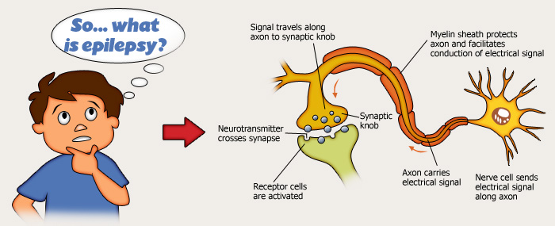

What is Epilepsy
Epilepsy is a common and diverse set of chronic neurological disorders characterized by seizures. Some definitions of epilepsy require that seizures be recurrent and unprovoked,but others require only a single seizure combined with brain alterations which increase the chance of future seizures. In many cases a cause cannot be identified; however, factors that are associated include brain trauma, strokes, brain cancer, and drug and alcohol misuse among others.
Epileptic seizures result from abnormal, excessive or hypersynchronous neuronal activity in the brain. About 50 million people worldwide have epilepsy, and nearly 80% of epilepsy occurs in developing countries. Epilepsy becomes more common as people age. Onset of new cases occurs most frequently in infants and the elderly. As a consequence of brain surgery, epileptic seizures may occur in recovering patients.
Epilepsy is usually controlled, but not cured, with medication. However, more than 30% of people with epilepsy do not have seizure control even with the best available medications. Surgery may be considered in difficult cases. Not all epilepsy syndromes are lifelong – some forms are confined to particular stages of childhood. Epilepsy should not be understood as a single disorder, but rather as syndromic with vastly divergent symptoms, all involving episodic abnormal electrical activity in the brain and numerous seizures.
Causes
The diagnosis of epilepsy usually requires that the seizures occur spontaneously. Nevertheless, certain epilepsy syndromes require particular precipitants or triggers for seizures to occur. These are termed reflex epilepsy. For example, patients with primary reading epilepsy have seizures triggered by reading. Photosensitive epilepsy can be limited to seizures triggered by flashing lights. Other precipitants can trigger an epileptic seizure in patients who otherwise would be susceptible to spontaneous seizures. For example, children with childhood absence epilepsy may be susceptible to hyperventilation.
In fact, flashing lights and hyperventilation are activating procedures used in clinical EEG to help trigger seizures to aid diagnosis. Finally, other precipitants can facilitate, rather than obligatory trigger seizures in susceptible individuals. Emotional stress, sleep deprivation, sleep itself, heat stress, alcohol and febrile illness are examples of precipitants cited by patients with epilepsy. Notably, the influence of various precipitants varies with the epilepsy syndrome. Likewise, the menstrual cycle in women with epilepsy can influence patterns of seizure recurrence. Catamenial epilepsy is the term denoting seizures linked to the menstrual cycle.
There are around 180,000 new cases of epilepsy each year. About 30% occur in children. Children and elderly adults are the ones most often affected.
There is a clear cause for epilepsy in only a minority of the cases. Typically, the known causes of seizure involve some injury to the brain. Some of the main causes of epilepsy include:
- Low oxygen during birth
- Head injuries that occur during birth or from accidents during youth or adulthood
- Brain tumors
- Genetic conditions that result in brain injury, such as tuberous sclerosis
- Infections such as meningitis or encephalitis
- Stroke or any other type of damage to the brain
- Abnormal levels of substances such as sodium or blood sugar
Diagnosis
Diagnosing epilepsy is a multi-step process, usually involving the following evaluations:
- Confirmation through patient history, neurological exam and supporting blood and other clinical tests that the patient has epileptic seizures and not some other type of episode such as fainting, breath-holding (in children), transient ischemic attacks, hypoglycemia or non-epileptic seizures
- Identification of the type of seizure involved
- Determination of whether the seizure disorder falls within a recognized syndrome
- A clinical evaluation in search of the cause of the epilepsy
- Based on all previous findings, selection of the most appropriate therapy
Provide Information to Help the Doctor
If you have had a seizure and you seek medical help, your doctor will want to know:
- Was the seizure caused by a short-term problem (like fever or infection) that can be corrected?
- Was it caused by a continuing problem in the way your brain’s electrical system works?
- Is there anything about the structure of your brain that could cause seizures?
- Was the seizure an isolated event, or does it mean that you have epilepsy?
Diagnostic Methods and Tools
The doctor’s main tool in diagnosing epilepsy is a careful medical history with as much information as possible about what the seizures looked like and what happened just before they began.
The doctor will also perform a thorough physical examination, especially of the nervous system, as well as analysis of blood and other bodily fluids.
A second battery of diagnostic tools includes an electroencephalograph (EEG). This is a machine that records brain waves picked up by tiny wires taped to the head. Electrical signals from brain cells are recorded as wavy lines by the machine. Brainwaves during or between seizures may show special patterns which help the doctor decide whether or not someone has epilepsy.
Imaging methods such as CT (computerized tomography) or MRI (magnetic resonance imaging) scans may be used to search for any growths, scars or other physical conditions in the brain that may be causing the seizures. In a few research centers, positron emission tomography (PET) imaging is used to identify areas of the brain which are producing seizures.Which tests and how many of them are ordered may vary, depending on how much each test reveals.
The Treatment Decision
The decision to treat is highly individualized, weighing the risks of treatment against the risks of seizures.
In determining whether to treat, physicians consider the risk-benefit ratio, which varies according to the age of the patient and his or her activity level. Waiting to see whether another generalized tonic-conic seizure occurs is less risky for a child living in a sheltered home environment than it is for a salesman who lives most of his life driving a car, or an elderly person with brittle bones. On the other hand, antiepileptic drugs have side effects which, while generally mild, can in some cases include liver damage and potentially fatal rashes and blood disorders. Thus the decision to treat becomes a highly individualized one in which the risks of the treatment are weighed against the risks of the seizures.
Factors Influencing Decision to Treat:
- Abnormal EEG
- Previous Seizure
- Person Drives
- Other Neurological Impairment
- Elderly
There is debate about whether or not children with febrile (fever caused) seizures should be placed on antiepileptic drugs. Current opinion favors withholding therapy for most of these children, since side effects of the medication may cause more problems than recurrent febrile convulsions. There may be instances, however, when treatment is prescribed.
Epilepsy & Women
If you have epilepsy and are thinking about getting pregnant, you probably have some important questions. Is it safe for me to get pregnant? Will having epilepsy make it harder for me to conceive? If I do get pregnant, how will I manage my seizures while I’m expecting? Could my anti-seizure drugs harm my baby?
Fortunately, most women with epilepsy give birth to normal, healthy babies, if you take precautions; your chance of having a healthy child is greater than 90%.
“There are increased risks, but these risks can be minimized by working carefully with your doctor. Don’t let these risks keep you from having a family if that’s what you really want,” says epilepsy expert Mark Yerby, MD, MPH, associate clinical professor of neurology, public health, and preventive medicine, Oregon Health Sciences University in Portland.
Before you try to conceive, you should talk to your neurologist and your obstetrician. Most doctors recommend that women with epilepsy be cared for by a high-risk obstetrician during their pregnancy. Both will want to monitor you closely throughout.
Getting Pregnant With Epilepsy
It’s possible that having epilepsy may make it more difficult for you to get pregnant. Women with epilepsy have fewer children than women in general. Their fertility rate is between 25% and 33% lower than average. Why is this? Here are some possible reasons:
- Women with epilepsy have higher rates of some conditions that can cause infertility. One of these is polycystic ovarian syndrome (PCOS)
- Women with epilepsy are more likely to have irregular menstrual cycles, which can make it more difficult to get pregnant
- Women with epilepsy are also more likely to have menstrual cycles that do not produce an egg. These are called anovulatory cycles
- Some ant seizure drugs may affect the hormone levels in your ovaries, which can affect reproductive functioning
- Women with epilepsy are more likely to have abnormalities in hormones involved in pregnancy
If your seizures are not under control, that may affect your fertility, as well. Experts say that if a woman is having seizures around the time her body is preparing to ovulate, they may disrupt the signals that make that process occur.
Once you become pregnant, it will be even more important to control your seizures. Having seizures during pregnancy can affect the health of your baby. You might fall, or the baby may be deprived of oxygen during the seizure, which can injure the baby and increase your risk of miscarriage or stillbirth.
Unfortunately, some of the most common drugs for controlling seizures have been found to increase the risk of birth defects. In the general population there is a 2%-3% chance that a child will have a birth defect. In women with epilepsy, this risk goes up to 4%-8%.
To help decrease the chance of birth defects, especially neural tube defects that can affect the brain and spinal cord, women with epilepsy should take at least 0.4 milligrams per day of folic acid supplements, before they try to conceive.
Epilepsy Drugs Safe for Pregnancy
Which epilepsy drug should you take? Unfortunately, there is no clear answer. There are no anti-seizure drugs that are completely without risk of causing birth defects. But some anti-seizure medications appear to be more dangerous for a developing baby than others, and your doctor may be able to avoid prescribing them. Here’s what doctors know so far:
But that’s not the whole story. Research has recently shown that women taking Lamictal have a higher risk of breakthrough seizures during pregnancy. That’s because metabolism of Lamictal — as well as other antiepileptic drugs — increases during pregnancy. This can cause a drop in the level of ant seizure medication in your system. If that level gets too low, you could have a seizure. But if your doctor prescribes a higher dose of Lamictal to make sure that you don’t have breakthrough seizures, there could be a higher risk of damage to your baby.
What makes things a bit more confusing is that information about the safety of antiseizure drugs during pregnancy is changing all the time. “This makes managing epilepsy during pregnancy very complicated,” says Jacqueline French, MD, professor of neurology at New York University’s Langone Medical Center and co-director of Epilepsy Research and Epilepsy Clinical Trials at the NYU Comprehensive Epilepsy Center. “It’s important that women with epilepsy who want to become pregnant make sure they are seeing a doctor who keeps up to date on all the newest research. What we know about epilepsy and pregnancy literally changes from month to month.” You can also check with the Epilepsy Foundation if you have questions.
Prepare in Advance for Pregnancy With Epilepsy
Depending on what your doctor says about your epilepsy, you may want to change medications before you get pregnant, or it might be fine to stay with the one you are taking now. If you are taking more than one antiseizure drug, your doctor may recommend that you taper down to just one. That’s because combinations of drugs to treat epilepsy have a higher risk of causing birth defects than just one drug alone.
If you are making any changes in your antiseizure medications at all, you should do that at least a year before getting pregnant. Switching medications has risks, too. You may not respond well to the new drug and have breakthrough seizures, which could be harmful to a pregnancy. When changing medications, doctors will usually add the new drug before stopping the old one. If you become pregnant during this time, the baby could be exposed to both drugs instead of just one.
Whether you change seizure drugs or not, be sure to add folic acid to your daily schedule. Starting before you get pregnant, take prenatal vitamins with 0.4 milligrams of folic acid every day, and keep taking them throughout the pregnancy. Folic acid has been shown to reduce the risk of some birth defects by 60% to 70%. Because there are some extra risks associated with pregnancy when you have epilepsy, it’s important to do everything you can to minimize those risks.
Epilepsy and Labor
Many women with epilepsy worry that they will have a seizure during labor. This is an understandable fear. As your pregnancy progresses, your metabolism changes. By the time you are nine months pregnant, the blood volume in your body is 50% greater than it was before you got pregnant. This means that the antiseizure medications in your body will be more diluted. That’s why your doctor will be monitoring the levels of medication in your blood throughout your pregnancy, and might increase the dosage if it’s getting too low.
So when labor starts, you may already be a little more vulnerable to a seizure. Then, you may miss a dose, because things don’t always go exactly according to plan when a woman goes into labor. You will also be in pain and breathing hard, which can increase the chance of a seizure. This doesn’t mean that seizures are common during labor and delivery, but they are a possibility.
What happens if you do have a seizure during labor? Your doctor may give you IV medication to stop the seizure. If that doesn’t work, you may have to have a caesarean section. Although most women with epilepsy have normal vaginal deliveries, they do have a higher rate of C-sections than other women. Sometimes, anticonvulsant drugs can also reduce the ability of the muscles of your uterus to contract. If this happens, your labor might not progress as well and a C-section may be your best option.
All of these concerns can seem overwhelming, but there’s no need to become overly anxious. “Although women have to be aware of the risks, the vast majority of women with epilepsy get through pregnancy just fine,” says French. Your chances of having a healthy child are excellent, especially if you talk with your doctor early and often, follow the advice you are given, and take good care of yourself.
Epilepsy & Children
The challenges of parenting are compounded if your child has epilepsy. Not only do you have the normal concerns about raising a child, but now you have to address emotional concerns both you and your child may have about living with epilepsy.
Emotional Toll of Epilepsy
It’s natural for a child who has a chronic illness or who is different from other children to feel resentful. Children with an illness such as epilepsy may develop emotional problems, such as poor self-esteem or depression. These problems may come from within (anger, embarrassment, frustration), or from outside (children with epilepsy may be teased by other children).
As a parent, you can help your child deal with these feelings in the following ways:
- Make sure your child understands as much about his or her disease as possible
- Try to get your child to be positive about his or her disease and focus on things he or she can do
- Help your child accept being a “different normal” and accept that there will be some risk in activities
As for your other children and the rest of your family:
- Be sure your other children understand about their sibling’s illness. If they are feeling neglected, try to spend more time with them
- If you think it’s necessary, seek family counseling to help everyone understand how to deal with the illness
- Let your extended family know about your child’s illness and answer any questions they may have
Children and Epilepsy Drugs
If your child is taking epilepsy drugs, you can work with your child’s doctor to make sure that your child is taking them correctly. You will need to:
- Learn the schedule for the medications (how many times a day to take them, whether they should be taken with food, etc.)
- Know if any of the medications require blood tests
- Find out what to do if your child forgets to take a dose of medication
- Be aware of the potential side effects of the medications and what to do about them
- Ask the doctor what to do if your child is ill or has a fever. (Fever sometimes brings on seizures.)
- Make sure your child’s school knows that he or she takes epilepsy medication, and that arrangements are made for him or her to take it at school (if necessary)
- Always carry a detailed list of your child’s medications
What Else Can I Do to Protect My Child?
If your child has epilepsy, monitor him or her near water, whether at home or outside.
Here are some tips for inside the home:
- Keep an eye on your child while he or she is in the bathtub
- Make sure the bathroom door opens outward rather than inward, so that it can still be opened in case your child falls. Take the locks off the bathroom door
- Check the bathtub drain to make sure it’s working properly
- Keep the water in the tub at low levels
- Keep the water temperature low to prevent scalding
- Install a shower or tub seat with a safety strap in the tub for older children
- Keep all electrical appliances away from the sink or bathtub
Outside the home:
- Don’t let a child with epilepsy swim alone
- Make sure all adults, including the lifeguards and swimming instructors, know that your child has epilepsy
- If your child has a seizure while swimming, get him or her out of the water as soon as possible. If anything seems wrong, contact the doctor right away
- Install a shower or tub seat with a safety strap in the tub for older children
- Keep all electrical appliances away from the sink or bathtub
Diet
Epilepsy: The Ketogenic DietThe Classic Ketogenic Diet is a labor intensive metabolic therapy with rigidly calculated meal plans.
Meals are high in fat, low in carbohydrates and protein to produce a high blood concentration of incompletely burned fat molecules called ketone bodies. Slight fluid restriction increases concentration of the ketone bodies and is useful for optimum effect. The state of ketosis is monitored in the urine while moderate to heavy ketosis is attempted.
The exact mechanism by which the Diet obtains seizure control is unknown. Ketosis, dehydration and acidosis each appear to play a role. The hypothesis, which arrived out of the Epilepsy recent research suggests that there is an alteration in the (1) acid-base balance; (2) water and electrolyte distribution; (3) lipid concentration (4) brain energy reserve or (5) a central action of ketones on the brain.
The Ketogenic Diet has been refined as a rigid metabolic therapy for epilepsy patients.
The usual candidate for the Diet is a patient with medically intractable generalized seizures which are not amenable to medications or surgery.
The results are showing promise in controlling seizures in young children and some adults. Currently, 51% of Epilepsy patients are either 90% improved or seizure free.
Exercising with Epilepsy
Don’t let fear of having a seizure may keep you from enjoying the benefits of regular physical activity. Seizures rarely occur during exercise; in fact, regular exercise inhibits seizure activity! Appropriate exercise can also help you maintain a healthy body weight, boost immunity, reduce stress, sleep better and feel more energized. The key to maximizing the benefits of exercise is to follow a well designed program that you can stick to over the long term.
Getting Started
- Talk with your neurologist about whether or not you are sufficiently stable to start doing
regular exercise - Take all medications as recommended by your physician
- The primary goal of your program is to improve your overall fitness level by choosing activities that you enjoy and will do on a regular basis
- Choose large-muscle activities, such as walking, biking, rowing or jogging
- If your fitness level is low, start with shorter sessions (10 to 15 minutes) and gradually
build up to 30 minutes of aerobic activity, five days per week - At least two days per week, follow a strength-training program with one to three sets
of exercises for the major muscle groups, with 10 to 15 repetitions - Mind-body activities, such as yoga and tai chi, are particularly effective for reducing
anxiety and enhancing relaxation
Exercise Cautions
- Avoid boxing, swimming under water, and soccer (because of heading). Activities
requiring special monitoring include swimming and anything from heights, such as
rock climbing or horseback riding - Pay attention to the precipitating factors of your seizures and schedule your exercise
accordingly. If you take medication, be aware of how it might affect your response to
exercise
Do's & Don'ts
During an epilepsy seizure / fit an epileptic person goes stiff, loses consciousness and then falls to the ground. This is followed by jerking movements. A blue tinge around the mouth is likely. This is due to irregular breathing. Loss of bladder and/or bowel control may happen. After a minute or two the jerking movements should stop and consciousness may slowly return.
Do’s:
- Protect the person from injury
- Remove harmful objects from nearby
- Cushion their head
- Look for an epilepsy identity card or identity jewellery
- Stay with the person until recovery is complete
- Be calmly reassuring
- Aid breathing by gently placing them in the recovery position once the seizure has finished
(see pictures below)

Don’ts:
- Restrain the person’s movements
- Put anything in the person’s mouth
- Try to move them unless they are in danger
- Give them anything to eat or drink until they are fully recovered
- Attempt to bring them round
Call for an ambulance if:
- You know it is the person’s first seizure
- The seizure continues for more than five minutes
- One tonic-clonic seizure follows another without the person regaining consciousness between seizures
- The person is injured during the seizure
- You believe the person needs urgent medical attention
Focal (partial) seizures
Sometimes the person is not aware of their surroundings or what they are doing. They may pluck at their clothes, smack their lips, swallow repeatedly, and wander around.
Laws on Epilepsy
The Indian Epilepsy Association (IEA) has been addressing various issues related to the right of epilepsy patients. The IEA is a registered society established in 1971, with the objective of providing better treatment, care and rehabilitation to persons suffering from epilepsy and to improve the overall welfare of their lives. The IEA is affiliated to the International Bureau of Epilepsy (IBE) and has been trying to better the lives of epilepsy persons through required legal reforms.
According to the Hindu Marriage Act, 1955 and the Special Marriage Act, 1958, a marriage can be solemnized if at the time of marriage neither party suffered insanity or epilepsy. With persistent efforts from the IEA, the Centre passed a Bill in 1999 delinking epilepsy from this law, allowing patients with epilepsy to have a legally valid marriage.
Following this, the IEA has been working towards an amendment in the Motor Vehicle Act too, in view of the international bureau for Epilepsy (IBE) has given a set of recommendations after studying the subject extensively. It has suggested that a limited restriction, for a period of 2 years following a seizure, (with certain qualification) is adequate, and the period thereafter should be considered risk-free for issuing a driving license.
Treatment Options
Medication
Anti-epileptic medications are the first line of defense against seizures. Today, there are several anti-epileptic medications available. Deciding which medications will benefit a patient is sometimes a complicated procedure. A variety of factors must be taken into account including seizure type, age, gender and the patient’s history with anti-epileptic drugs. Tools such as the EEG are used to determine seizure type.
Once your doctor prescribes a medication, it is important to follow the regimen he sets for you. Taking the medication in the correct manner is critical. If you are having difficulty remembering to take your medication, consult your physician. Seizure calendars and pill boxes can be helpful tools.
Surgery
More than one million people in the United States suffer from epilepsy. Their lives are filled with uncertainty and restrictions because they never know a seizure will strike. People who have seizures are denied the opportunity to enjoy simple pleasures like driving a car.
Today, epilepsy surgery provides patients hope for a brighter future. Advances in diagnostic and surgical approaches have greatly improved the outcomes of epilepsy surgery and more people are leading seizure-free lives.
Many patients who suffer from simple and complex partial epilepsy uncontrolled on medications can benefit from surgery. Yet many do not receive this treatment due to misconceptions about the procedure.
Surgical Evaluation
Five phases of evaluation and treatment are required for a patient to be considered for surgery:
Initial Encounter
During an in-depth evaluation of each patient, Epilepsy Program physicians explore several non-surgical options for treatment of seizures.
Phase I-Telemetry Monitoring
If the physician needs further testing to determine the patient’s seizure type or if the patient is a candidate for surgery, Phase I telemetry is required. This requires a stay in the hospital. During this time, electrodes attached to the scalp and wires inserted in to the cheek areas (sphenoidal electrodes) transmit the patient’s EEG to a small amplifier worn by the patient. When seizures do not occur, physicians induce them by withdrawing medication and depriving the patient of sleep. Recording typical seizures (ictal recordings) on EEG and videotape is the single most important goal of Phase I. The location of the EEG seizure onset reveals the focal source of the seizures in most patients. If the patient is a candidate for surgery and the physician obtains sufficient data during Phase I to determine seizure type and to pinpoint the source of the seizures, the patient then proceeds to Phase III (surgery). If there is not sufficient data the patient may be given the option of a medical or dietary regimen to control their seizures, or they may be referred to Phase II. After Phase I, the team reviews the patient’s results from their stay in the hospital to determine what will be best for that patient. This process may take a while.
Phase II – Intracranial Telemetery Monitoring
For surgery candidates, this is necessary if physicians need to evaluate deeper areas of the brain to find the source(s) of the seizures. This is required in about 20% of patients. Grids are placed over lateral seizure areas or depth electrodes are surgically implanted deep in to the brain, near the area which is likely producing seizures. The grid electrodes are used when seizures arise near those areas that govern language and movement. The patient remains in the hospital for about three week or until enough data is captured to determine where the seizures are originating from. Monitoring is similar to Phase I, except that the patient’s movements are more restricted and there may be some discomfort associated with the intracranial placement of the electrodes. As in Phase I, physicians continuously monitor the patient. Most Phase II patients can proceed to surgery. Patients with depth electrodes require about 1 month for their scalp to heal before surgery. Patients with grids have their surgery when the grid is removed at a second craniotomy.
Phase III – Surgery
Neurosurgeons remove the small portions of damaged brain that cause the seizures. Based on the findings of Phases I and II, physicians determine which of several possible procedures will be most successful. The most common procedure is anterior temporal lobectomy, or removal of a section of the anterior temporal lobe and the deep structure (hippocampus). This is the source of seizures in most epilepsy patients evaluated for surgery. Approximately 83 percent of patients undergoing temporal lobectomy eventually become free of seizures. All surgical procedures require close medical follow-up and may involve risks and complications. Patients generally return to normal activities within three to four weeks and to full functioning, including work, within three months.
Phase IV – Long Term Follow-Up
The Epilepsy Program has a long term commitment to patients after surgery. Their progress is followed closely for one year and once annually throughout their lifetime. Psychosocial counseling and cognitive (memory) and vocational rehabilitation help patients in their transition to a more active life.
Outcomes
More than 83 percent of patients undergoing temporal resections are seizure-free and the conditions of more than 97 percent are markedly improved. In frontal lobe epilepsy, seizures are markedly reduced in more than 85 percent of patients undergoing resections.
VNS
Vagus Nerve Stimulator Showing Positive Results with Seizure ManagementThere are many forms of treatment for epilepsy. The VNS (Vagus Nerve Stimulator) has been developed for epilepsy patients who are not candidates for surgery and whose intractable seizures are not managed with anti-seizure medications.
The vagus nerve is one of the primary communication lines from the major organs of the body to the neck to the vagus nerve. Stimulation of the vagus nerve can stop seizures, reduce the intensity and frequency of seizures in some patients. The VNS periodically stimulates the vagus nerve, usually for a brief period.
The VNS is an implanted pacemaker-size stimulator. It has a wire lead that attaches to the vagus nerve by means of an incision. The incision is made on a naturally occurring crease on the neck, thereby making the healed scar practically invisible. The procedure takes a few hours and the patient is usually released from the hospital on the next day. After the patient stabilizes, the physician uses a wand to activate the VNS.
Since 1997, there have been a number of medically intractable patients showing promising results in managing their seizures through the VNS.Preliminary findings indicate that VNS stimulation seems to become more effective over time and has helped improve the patient’s quality of life.Many patients on VNS have also experienced reduction and/or discontinuation of anti-seizure medications.Recent information indicates that some concurrent anti-seizure medications may be reduced during VNS therapy.
After having a seizure, some patients before implantation of the VNS would spend the remainder of the day recovering in bed. Since implantation, the postictal period has improved so that patients are able to resume activities within a short time. Improved eating habits have enabled several seriously underweight patients gain weight. As a result of its effectiveness, 57% of the patients have had their anti-epileptic medications reduced or discontinued.
These interim results show decreased seizure frequency, improved quality of life, and reduced and discontinued AEDs.